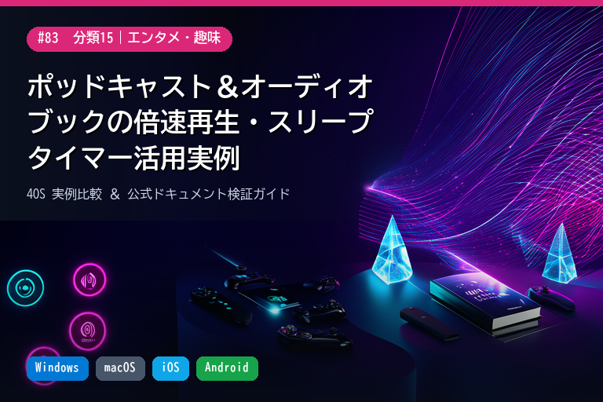

#83｜分類15: エンターテインメント・趣味 2026-11-26

ポッドキャスト＆オーディオブックの倍速再生・スリープタイマー活用実例｜Windows・macOS・iOS・Android
「ポッドキャストやオーディオブックを聴きながら作業をしたいけれど、時間が足りない」「寝落ちして最後まで聴き続けてしまうのが困る」といった悩みをお持ちではありませんか？
効率的にコンテンツを消費するための「倍速再生」と、聞き逃しを防ぐための「スリープタイマー」は、現代のリスニング環境において必須の機能です。しかし、利用しているOSやデバイスによって、その操作方法や標準機能の範囲は大きく異なります。
この記事では、Windows、macOS、iOS、Androidの4つの主要OSにおいて、ポッドキャストやオーディオブックを快適に楽しむための「倍速再生」と「スリープタイマー」の実践的な活用術を徹底比較します。
4OS比較早見表
| 機能 | Windows 11 | macOS | iOS (iPhone/iPad) | Android |
|---|---|---|---|---|
| 主な標準アプリ | Music / ブラウザ | ミュージック / Podcasts | Podcasts / Apple Music | YouTube Music 等 |
| 倍速再生 | ブラウザ拡張・アプリ依存 | 標準搭載（0.5〜3.0倍） | 標準搭載（0.5〜3.0倍） | アプリ依存（最大2.0倍等） |
| スリープタイマー | 拡張機能が必要 | ショートカットで自動化 | 標準搭載（スライダー） | 標準搭載（スライダー） |
| 音声のみキャスト | 非対応（映像同期前提） | 非対応（Bluetooth推奨） | 非対応（Bluetooth推奨） | 非対応（Bluetooth推奨） |
1. Windows 11 での実例手順
Windows環境では、ポッドキャスト専用のネイティブアプリが乏しいため、Webブラウザをメインとした視聴スタイルが一般的です。
実例手順
- ブラウザで視聴: Microsoft EdgeやGoogle Chromeからポッドキャストサイトへアクセスします。
- 倍速設定: 再生プレイヤー内の「...（設定メニュー）」から「速度」を選択し、好みの倍速（0.5〜3.0倍など）に調整します。
- スリープタイマーの運用: Windows OS自体にはメディア再生用の標準スリープタイマーが存在しません。そのため、ブラウザ拡張機能（例：Sleep Timer for Chrome/Edge等）をインストールするか、タスクスケジューラーを用いた自動化を検討する必要があります。
標準機能の制限事項
- Musicアプリの制約: Windows標準の「Music」アプリでは、ポッドキャスト再生時の倍速設定が非対応となるケースが多いです。
- OSレベルのタイマー不在: 一定時間後に再生を停止する純正機能は提供されていないため、サードパーティ製ツールへの依存度が高くなります。
よくあるトラブルと解決法
- 問題: ブラウザの「速度」設定が反映されない、または再生が止まる。
- 解決策: ブラウザのプロセスを再起動するか、「Microsoft Store」から公式対応アプリ（Spotify for Windowsなど）を利用してください。
- 問題: スリープタイマーで自動停止させたいのに機能しない。
- 解決策: OS標準機能では不可能なため、ブラウザ拡張機能を追加するか、スマートスピーカーとの連携を推奨します。
- 問題: オーディオブックの文字起こし（字幕）表示がPCでできない。
- 解決策: Windows 11標準機能には非対応のため、「Microsoft Edge」でWebブラウザ版サービスを利用するか、専用アプリへ切り替えてください。
2. macOS での実例手順
macOSはApple純正の「ミュージック」や「Podcasts」アプリが非常に強力であり、安定した操作感を提供します。
実例手順
- アプリ起動: 「ミュージック」または「Podcasts」アプリを起動し、ライブラリからコンテンツを選択します。
- 倍速設定: メニューバーの「表示」→「速度」またはプレイヤー内の歯車アイコンから、0.5〜3.0倍の範囲で設定します。
- スリープタイマーの自動化: 標準メニューにはありませんが、「ショートカット（Shortcuts）」アプリを活用します。
- 作成手順: 「メディアプレイヤー」を監視し、再生開始を検知→指定時間後に停止させるワークフローを作成することで自動化が可能です。
標準機能の制限事項
- ショートカットの制約: ショートカットによる自動停止は、アプリが完全に閉じられていると動作しない場合があります（バックグラウンドプロセスとして動いている必要があります）。
- Core Audioの仕様: 外部DACやヘッドホンの接続には「Core Audio」が必要ですが、設定画面から直接詳細な調整を行う項目は限られています。
よくあるトラブルと解決法
- 問題: 「速度」メニューがグレーアウトしており変更できない。
- 解決策: Apple Musicのサブスクリプション契約状況やDRM保護コンテンツの影響の可能性があります。ブラウザ版へ切り替えるか、サードパーティアプリを検討してください。
- 問題: ショートカットによる自動停止が失敗し続ける。
- 解決策: 「Shortcuts」内の「メディアプレイヤー」コンポーネントが正しく認識されていない可能性があるため、再起動や権限の再確認を行ってください。
- 問題: AirPlayでiPhoneからMacに音声を送信したい（映像なし）。
- 解決策: 標準のAirPlayは画面ミラーリングが前提です。公式ドキュメントではオーディオのみの送信は明示されていないため、Bluetooth接続を推奨します。
3. iOS（iPhone / iPad）での実例手順
モバイル環境では、最も直感的で高度な操作が可能です。特にスリープタイマーは標準装備されています。
実例手順
- アプリ起動: 「Podcasts」または「Apple Music」を起動します。
- 倍速設定: 再生画面の「...（オプション）」ボタンをタップし、「速度」から選択します。
- スリープタイマー設定: プレイヤー画面内のスライダーで直接調整可能です。また、ダウンロードアイコンをタップするだけでオフライン聴取も即座に実行できます。
標準機能の制限事項
- ライブラリの分離: 「Podcasts」と「Apple Music」は別アプリであり、購入済みアイテムであっても相互にライブラリが共有されない場合があります。
- 背景動作の保証: 画面ロック時に再生が止まる設定がある場合があり、常に手前（Always on top）のような挙動を保証するものではありません。
よくあるトラブルと解決法
- 問題: スリープタイマーを設定しても、iPhoneがスリープモードに入った瞬間に音楽が止まる。
- 解決策: 「設定」→「画面表示と明るさ」で自動ロックを無効化するか、Bluetoothヘッドホン接続時にのみ動作を保証する環境を確認してください。
- 問題: オフライン聴取のダウンロードが失敗する。
- 解決策: 「設定」→「Podcasts/Apple Music」→「データ使用量制限」の設定を確認し、Wi-Fiネットワーク下でのみ実行されるよう指定を変更してください。
- 問題: AirPlayでMacに音声を送信したいが接続できない。
- 解決策: iOSのAirPlayは画面ミラーリング前提です。オーディオのみを送信する場合はBluetoothヘッドホンやスピーカーへの直接接続を推奨します。
4. Android での実例手順
Androidはメーカーや機種によってUIが異なりますが、基本的にはプレイヤー内の設定で完結する仕組みです。
実例手順
- アプリ起動: 「YouTube Music」やメーカー製アプリを起動します。
- 倍速設定: 再生中のエピソードを開き、「...（オプション）」から「速度」を選択します。※機種により上限が異なる場合があります。
- スリープタイマー設定: プレイヤー画面下部のスライダーで直感的に操作可能です。
標準機能の制限事項
- 倍速の上限: メーカー固有アプリ（Samsung Music等）では、倍速再生の上限が2.0倍に固定されている機種があります。
- UIの差異: スリープタイマーは「設定」メニューではなく、プレイヤー画面内のスライダーでしか操作できない場合が多いです。
よくあるトラブルと解決法
- 問題: 「速度」ボタンを押しても反応しない、または変更できない。
- 解決策: DRM保護コンテンツやメーカー固有の制限の可能性があります。「YouTube Music」などの代替アプリを試すか、PCでのブラウザ拡張機能を利用してください。
- 問題: スリープタイマーを設定しても、スマホがスリープモードに入った瞬間に音楽が止まる。
- 解決策: 「設定」→「アプリ」から該当アプリの「バッテリー最適化」を「制限なし」に変更するか、スマートスピーカーとの連携を推奨します。
- 問題: Google Homeアプリでの画面キャストが音声のみできない。
- 解決策: 公式ドキュメント通り、キャストは映像と音声の同期出力です。オーディオブック聴取時はBluetoothヘッドホン接続を推奨します。
まとめ：快適なマルチOS環境を作るポイント
ポッドキャストやオーディオブックを最大限に活用するためには、各OSの特性を理解した上で、適切な周辺機器を組み合わせることが重要です。
例えば、PCでじっくりと文字起こしを確認しながら聴くなら、ゲーミングモニターを活用して視認性を高めるのがおすすめです。また、没入感を追求するなら、高品質なDAC（デジタル・アナログ・コンバーター）やヘッドホンを導入することで、細かな音のニュアンスまで聞き取れるようになります。
さらに、リラックスした姿勢で聴きたい場合は、ゲームパッドを操作デバイスとして活用したり、ストリーミング機器を導入してリビングのスピーカーから高音質で流すといった環境構築も、リスニング体験を格段に向上させるポイントです。
自分のライフスタイルに合わせて、最適なOSと周辺機器の組み合わせを見つけてみてください。
参考文献・公式ドキュメント（一次情報ソース）
本記事の手順・仕様は以下の各OSおよびツールの公式ドキュメントに基づいています。OSアップデートによりメニュー名称や挙動が変わる場合があるため、最新仕様の確認にもご活用ください。